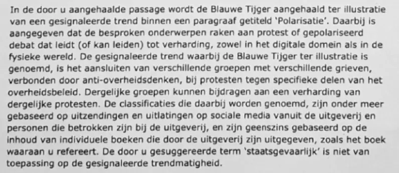

Prueba · Carta
Ministro de Justicia a Giltay, 12 de enero de 2021
El ensayo cita esta carta por dos motivos. Ambos pasajes figuran a continuación, cada uno con su propio enlace.
No se basa en el libro
«Las clasificaciones que se mencionan al respecto se basan, entre otras cosas, en emisiones y declaraciones en redes sociales procedentes de la editorial y de personas vinculadas a la editorial, y no están en modo alguno basadas en el contenido de libros individuales publicados por la editorial, como el libro al que usted se refiere». Página 1 de la respuesta, página 2 del PDF, tercer párrafo. El neerlandés «geenszins» se traduce aquí por «en modo alguno». Traducido del neerlandés; el texto original figura a continuación.
“De classificaties die daarbij worden genoemd, zijn onder meer gebaseerd op uitzendingen en uitlatingen op sociale media vanuit de uitgeverij en personen die betrokken zijn bij de uitgeverij, en zijn geenszins gebaseerd op de inhoud van individuele boeken die door de uitgeverij zijn uitgegeven, zoals het boek waaraan u refereert.” Texto original
«Peligroso para el Estado» no es aplicable
«El término “peligroso para el Estado” que usted sugiere no es aplicable a la tendencia observada». La última frase de ese mismo párrafo. El propio Giltay había empleado la palabra: en su carta al NCTV escribió que nunca había sabido que su editorial fuera peligrosa para el Estado. Traducido del neerlandés; el texto original figura a continuación.
“De door u gesuggereerde term ‘staatsgevaarlijk’ is niet van toepassing op de gesignaleerde trendmatigheid.” Texto original

Por qué importa este documento
En esta carta del 12 de enero de 2021, el ministro de Justicia y Seguridad confirma que el pasaje sobre la editorial De Blauwe Tijger en la 53.ª evaluación de la amenaza terrorista en los Países Bajos (Dreigingsbeeld Terrorisme Nederland 53, DTN53) no se basa en el contenido del libro de Giltay. El 23 de noviembre de 2020, Giltay había preguntado al Coordinador Nacional de Seguridad y Antiterrorismo (NCTV) si también su libro entraba en la categoría de «propaganda antigubernamental», «noticias falsas» o «teorías de la conspiración» y, en caso afirmativo, en qué pasajes y números de página.
La respuesta no dice literalmente que no, pero equivale a ello: las clasificaciones no están en modo alguno basadas en el contenido de libros individuales de la editorial, incluido el suyo, y la carta no menciona pasajes ni números de página. Según la carta, tampoco el término «peligroso para el Estado», que el propio Giltay había empleado, es aplicable a «la tendencia observada».
El ensayo contrapone esta carta a la postura del Ministerio de Defensa, que en 2018 describió la misma obra como un libro en el que se mezclan hechos y ficción.
Procedencia
- Documento
- Respuesta en nombre del ministro de Justicia y Seguridad
- Remitente
- Coordinador Nacional de Seguridad y Antiterrorismo (NCTV), Ministerio de Justicia y Seguridad, La Haya
- Destinatario
- Edwin F. Giltay, La Haya
- Fecha
- 12 de enero de 2021
- Referencia
- 3175305
- Asunto
- «Vraag Dreigingsbeeld Terrorisme Nederland 53» (pregunta sobre la 53.ª evaluación de la amenaza terrorista en los Países Bajos)
- Referencias
- La carta de Giltay del 23 de noviembre de 2020 al NCTV, incluida como página 1 de este PDF
- Firmado
- En nombre del ministro, por H.P. Schreinemachers, director de Gestión de Crisis del NCTV
- Delegación de firma
- La carta se considera carta del ministro de Justicia y Seguridad, Ferdinand Grapperhaus, que es responsable de ella. Por eso la cita de la sección de voces se le atribuye a él
- Idioma
- Neerlandés
- Véase también
- Novini, Defensie flatert voort, 25 de agosto de 2018
Citado en:
- el ensayo «La prohibición cayó, el libro quedó en pie» en los capítulos (2) «El Gobierno se contradice», (7) «Ninguna respuesta sobre el fondo» y (11) «Poner fin al silencio sobre Srebrenica» y en la diapositiva «Ministerio de Justicia · 2021» de la presentación «La historia en el mapa»
- la sección de voces bajo el epígrafe «Posiciones oficiales»
- la biografía del autor.
Documento: https://
Modificado por última vez el 13 de septiembre de 2026, consultado el 27 de noviembre de 2026.

Esta página es una ficha de prueba del libro El general del encubrimiento de Edwin Giltay y del sitio web que lo acompaña.